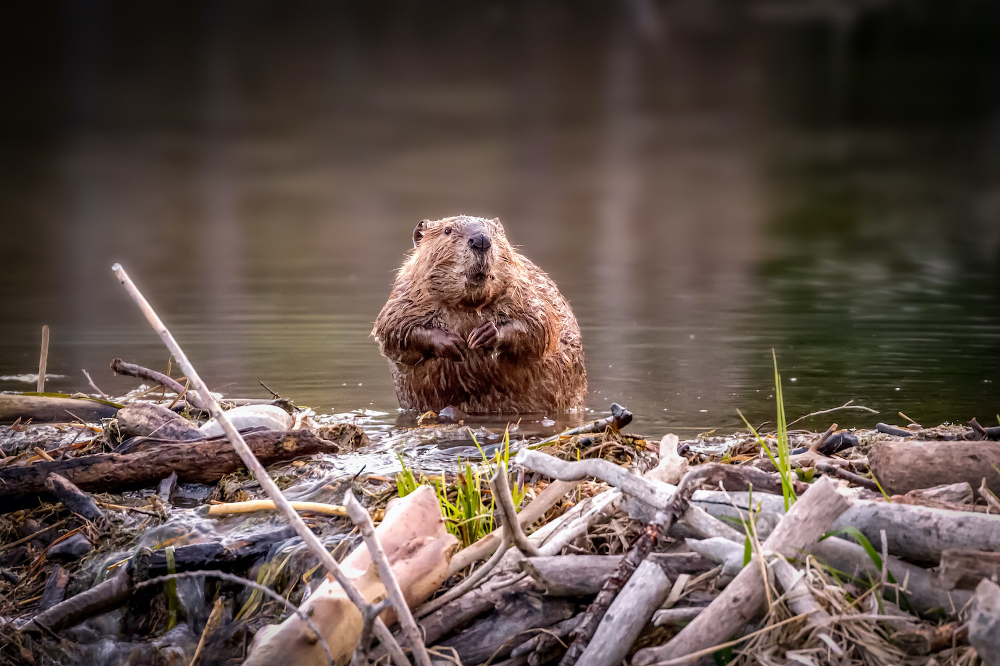

Бобр в естественной среде

На фотографии выше — обыкновенный бобр (Castor fiber) за работой. Эти животные активны преимущественно в сумерках и ночью.
Бобровые хатки — это куполообразные сооружения из веток, ила и травы. Вход в хатку всегда находится под водой, что защищает жилище от хищников.
Посмотреть документальное видео о десанте бобров можно здесь:
▶ Высадка бобра